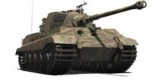

Tiger II (Panzerkampfwagen Tiger Ausf. B) adalah tank berat Jerman yang digunakan pada akhir Perang Dunia 2. Diproduksi dari tahun 1943-1945, tank ini dikenal dengan armor tebal dan senjata 88mm yang sangat powerful. Tiger II memiliki bobot sekitar 68 ton dan dianggap sebagai salah satu tank paling ditakuti sekutu pada masa itu.
Tank ini digunakan dalam berbagai front pertempuran, terutama di Eropa Timur dan Barat. Meski advanced untuk zamannya, jumlah produksinya terbatas hanya sekitar 492 unit karena keterbatasan industri dan bahan baku Jerman.
